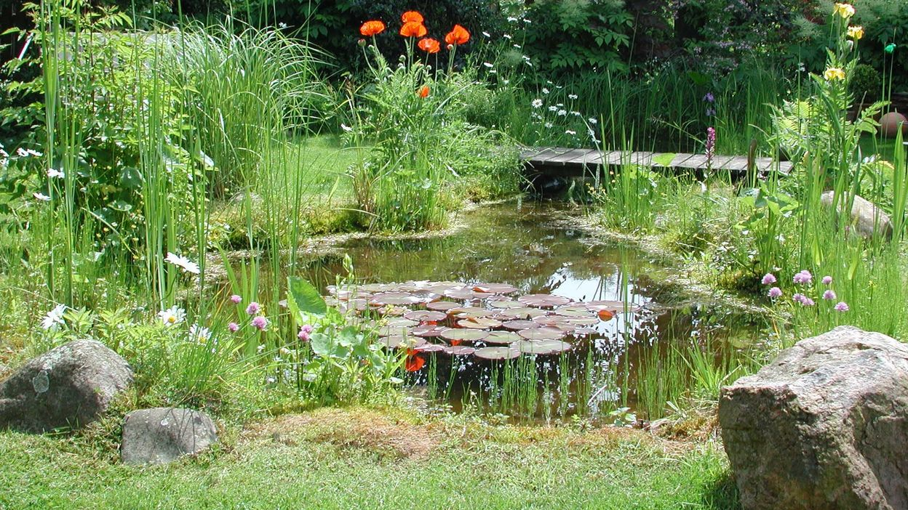
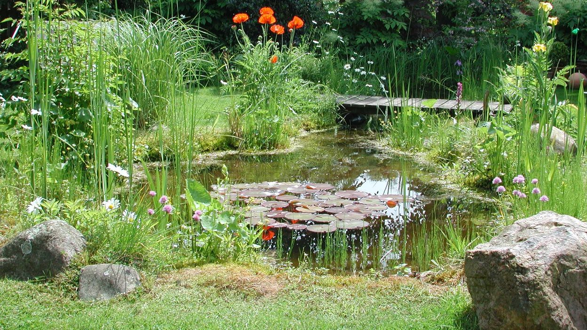

Actuellement, l'homme mène une guerre contre la nature. S'il gagne, il est perdu.
C'est dans les utopies d'aujourd'hui que sont les solutions de demain.
Bienvenue à tous,
L’Oasis Partagé est un projet d’éco-centre au cœur de la ville Tertre.
Un véritable havre de paix et de détente ouvert au public et accessible à tous. Venez nous rendre visite et profiter de loisirs gravitant autour de la nature, de l'écologie et de la biodiversité.
L’Oasis Partagé se veut être le théâtre d’ateliers pédagogiques, d'évènements et de festivités locales en vue de sensibiliser la population aux problèmes environnementaux et aux solutions qui existent.
La permaculture au potager vous intéresse ? l’idée d’un jardin éco responsable vous tient à cœur ? Envie de vous détendre dans un cadre verdoyant ? Alors venez nous rejoindre …
Un projet éco-responsable
L’intégralité de notre jardin est travaillé dans le respect de la terre et de la biodiversité.
Des économies ?
Que ce soit via le compostage collectif, ou le stockage des énergies disponibles … Il existe des moyens de faire des économies.
De tous niveaux
Nos jardiniers ne sont pas tous expérimentés. Certains débutent, mais tous partagent le désir de travailler la terre de manière naturelle.
Le partage avant tout
Ce projet met en avant l’entraide et le partage. Que ce soit le savoir-faire, les graines, plantes … Ensemble nous pouvons atteindre nos objectifs individuels et collectifs.
Le respect
Nous respectons la terre, l’eau, la faune, la flore et notre prochain. Une valeur primordiale pour une société pérenne.
Comme un colibri…
Si chacun fait sa part … c’est le monde qui y gagne. Crise économique, guerres, crise climatique … il n’y a qu'ensemble que nous parviendrons à surmonter les conséquences à venir.
La philosophie de l’Oasis Partagé
Né d’une démarche citoyenne, l’Oasis Partagé se base sur un sombre constat : Les crises que nous traversons et la société actuelle nous éloignent des choses primordiales de la vie. Le contact avec la faune et la flore, le respect de la nature, les liens sociaux sont autant de points qui se font de plus en plus rares.
Il était temps pour nous de réagir, de faire notre part pour améliorer cela.
Ce projet collectif permet à chacun de retrouver un “nid douillet , un cadre verdoyant où l’aspect communautaire, le respect et le partage nous permettront de nous ressourcer.
 

Nos Objectifs
- Promouvoir l'écologie et la permaculture : Agrader la terre (≠ dégrader), respecter le sol, l’humain et la biodiversité en suivant les principes de la permaculture et du bon sens.
- Renforcer le lien social, favoriser les échanges, l’entraide, le dialogue non violent et la convivialité…. si importants dans le développement de chacun d’entre nous.
- Sensibiliser à la nature, à la biodiversité, à l’économie de l’eau, au recyclage des déchets … Permettre de découvrir des techniques de culture naturelle, de gestion des déchets et d'énergies éco-responsables et donc comment réaliser de réelles économies.
- Offrir à tous un nouvel espace de loisirs et de détente. Un éco-lieu où chacun est libre de venir flâner, apprendre et partager.
- Contribuer à enrichir le cadre de vie de notre commune (un terrain privé et fermé, laissé à l’abandon et jonché de détritus est transformé en un éco lieu pédagogique ouvert à tous, un nouvel espace de loisir).
- Sensibiliser les enfants (mais aussi les adultes) à la nature, à l'écologie et au recyclage.
- Développer un pôle écologique en vue de la création d’évènements rythmant la vie locale (Fêtes de quartiers, ateliers ou mini-conférence en permaculture, pique-niques, évènements en collaboration avec des associations de l’entité …)
Pour y parvenir, toutes les actions ont leur importance :
- Un lieu de compostage ouverts aux citoyens
- Un lieu de détente public …
- Des ateliers pédagogiques
- Le jardin pour tous (un potager adapté aux personnes à mobilité réduite), les toilettes sèches, les collaborations avec des associations de la région …
... Toute nouvelle idée peut nous aider, n’hésitez pas à nous la partager !